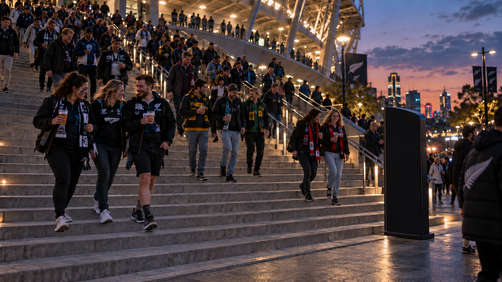

P: present · D: debug · Esc: controls
AN INTERACTION IN SHARED SPACE
THE MATCH ENDS. THE NEIGHBOURHOOD RESTS.
A little quieter.
A little kinder.
See the sound we make together.
+ STADIUM EXIT · DUSK
Interactive installation concept / 01
Interactive installation concept / 01
COLLECTIVE SOUND, SHARED SPACE CONCEPT VISUALISATION
THE STAIRCASE RIGHT NOW
Quiet / calm
4 / 100
QuietLoud